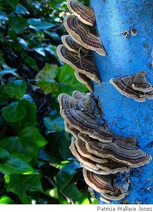

William Doreski
Your Dream of Giant Mushrooms
Your dream of giant mushrooms
confounds you. Big as pillows,
such aggressive fruiting suggests
how shapeless the next evolution
could be. Crouched in your bedroom
with dawn burning in the slats
of your closed blinds, you consider
abandoning your mind somewhere
on the way to work. On Route Ten
a tractor for sale, a Farmall
from the Sixties, red paint faded
as the kisses wasted years ago
on a husband who staggered away
clutching a half-decayed heart.
You’d like to purchase that tractor
to plow a shallow ditch a mile
or two through the forest, loosening
the compact soil to encourage
an army of giant mushrooms.
You could command this army
to rise from its mycelium
and trundle into the city
of Keene and terrorize children
and dogs and disgust the adults
who disgust you every day
with their ignorance and swagger.
But despite the oily texture
of your dream you lack the language
to properly address a mushroom.
And if they ever grew that large
they’d fracture from excess weight
and could hardly march several miles
to intimidate downtown Keene.
But dreams like this require
the respect of exploitation,
so as you pour yourself coffee
and peel a banana for breakfast
the mushroom part of you shivers
with excitement, meaty white texture
exuding the woodsy aroma
that has kept you fresh all your life.
Seven-Card Stud with the Dean
I deal myself aces: five, six,
seven of them. He doesn’t care,
his expression plain as a bagel.
Around us the student union sighs
a collective sigh reeking of French
fries, sweets, and filthy gym clothes.
The dean likes losing at cards
because he’s won so much in life —
tenure, an overripe salary,
and a mannequin-perfect wife.
He doesn’t realize he lost her
two hands ago, signing the usual
IOU without looking. One night
as his bedroom fills with stars,
as his body and hers rehearse
that eternity he’s sure they’ll share,
the doorbell will ring, and wrapped
in my blackest cloak I’ll enter
with a lawyer buff as a turbine
and a bailiff big as the Bronx,
and will take legal possession
of the woman he thought he owned.
Out in the street I’ll free her,
of course, the joke not so funny,
and if she wishes to hustle back
to her formaldehyde spouse,
let her. More likely she’ll doff
her flimsy nightgown and sprint
gleaming up and down the street
emitting a single high note,
inviting the moon to explain her.
The dean smiles as I sweep the cards
from the table and shuffle them,
and the sweaty and greasy smells
drape over him and annul
whatever cunning thoughts he had
when he was young and scholarly,
before he succumbed to his flesh.
A Boulder Larger than My House
The smell of the morning rain
has penetrated a boulder
larger than my house. Leaning
against its terrible density
I absorb that rain-smell the way
I absorbed you when you swept
from California to New England
with your intellect still intact.
Geese wheel honking overhead,
their chevrons still imperfect
but their compass-sense aligned
with polar magnetic forces
no one questions. The boulder
impresses with its indifference,
as you do. The lichen inscribed
on its west and north flanks presents
enigmas too rigorous
for botanists to transcribe;
but at this moment you’re scanning
comparable legends scrawled in gray
brain matter almost as tough
as lichen, and reading the results
to patients whose neuroses compare
favorably to mine. You learned
your trade by reading Nietzsche
and William James, ignoring Freud
and Jung, my favorite charlatans.
No wonder we’re hardly friends
any more. The rain-flavor sweetens
the forest. The geese fluster south,
following a single line of force.
As I watch the sky the boulder sighs
a very old sigh and I stroke
its cold rough expression the way
I’d stroke you if you’d let me,
the autumn-brown forest smiling
through its fuzzy, old-fashioned beard.
William Doreski, Professor of English, Keene State College (New Hampshire), teaches creative writing, literary theory, and modern poetry. Born in Connecticut, he lived in Boston, Cambridge, and Arlington (MA) for many years, attended various colleges, and after a certain amount of angst received a Ph.D. from Boston University. He has published several collections of poetry, most recently Sacra Via (Tatlock Publications, 2005) and Another Ice Age (Cedar Hill, 2007), three critical studies — The Years of Our Friendship: Robert Lowell and Allen Tate (University Press of Mississippi, 1990), The Modern Voice in American Poetry (University Press of Florida, 1995), and Robert Lowell’s Shifting Colors (Ohio University Press, 1999) — and a textbook entitled How to Read and Interpret Poetry (Prentice-Hall). His critical essays, poetry, and reviews have appeared in many academic and literary journals, including Massachusetts Review, Notre Dame Review, The Alembic, New England Quarterly, Harvard Review, Modern Philology, Antioch Review, and Natural Bridge.
|